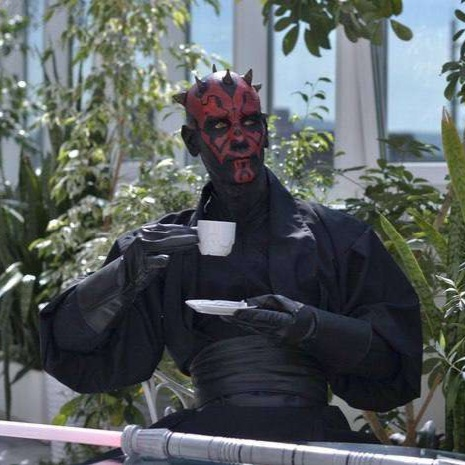

# About me

Gooooooooooooooood morning, Vietnam Rolling Scopes School!
My name is Jokarny Babaj and I want to become a professional Web-developer.
I am passionate about programming, I really like to write code and solve different tasks with it. Also I like to help other people studying. That is why the Rolling Scopes School is a perfect place for me.
Besides programming, I want to learn to play chess and study German language.
See you in chats and on cross-checks, guys. Good luck :)